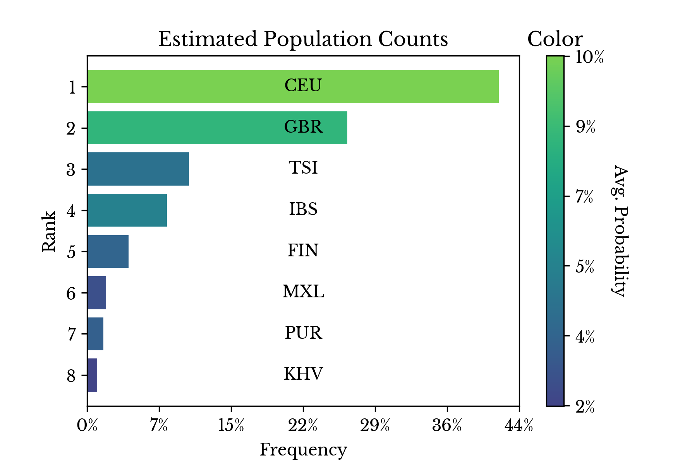
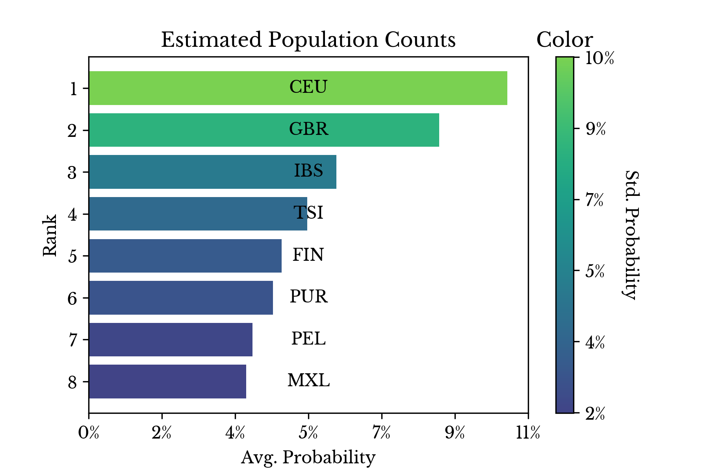
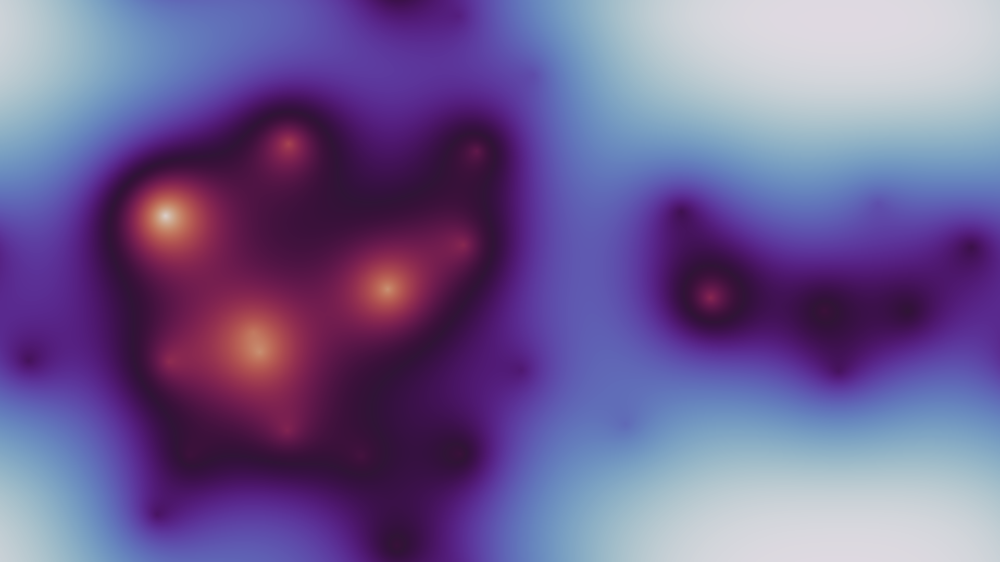

Ancestry Determination Part 3: openSNP Data Evaluation
Tue, 26 Jan 2021
Ancestry, Bioinformatics, Data Science, Data Visualization, Genetics, Genomics, Machine Learning
The website openSNP allows users to share and discuss genetic information [1]. The purpose of the site is perhaps best summarized by its bio on Twitter: "crowdsourcing genome wide association studies" [2]. This post uses the machine learning and statistical techniques developed in previous blog entries to analyze the ancestry of openSNP members who have genotyping data associated to their accounts. By comparing the derived results with the self-reported answers from openSNP users, the accuracy of these methods on real-world data is assessed.A Common Format
A variety of direct-to-consumer genetic testing companies exist that report different portions of genetic information in different file formats. File types from a number of these companies are found in the openSNP data, including ancestry and 23andMe. To help better support these heterogenous offerings, a small subset of single nucleotide polymorphisms (SNPs) are selected for inclusion in the final model. The selection process used is similar to the one described in the post "Identifying Family Relationships using Genetic Similarity Measures" [3]. Again, the number of SNPs selected attempts to strike a balance between the applicability of the model to data from different labs and performance.With regard to modeling, the approach taken here is similar in spirit to the one outlined in the post: "Ancestry Determination via Genetic Variant Analysis" [4]. Once again, the model is trained using the International Genome Sample Resource (IGSR) data [5]. For inference, the genotyping files from openSNP are parsed and the allele frequencies for each of the tracked SNPs are encoded into a matrix. In this way, the encoded matrix represents a file-format agnostic representation of the genotyping data.
Data Quality & Degredation
The heterogeneity of file types in the openSNP data presents several challenges. One of the most difficult to address is that many users are missing genotype information for specific SNPs. Unfortunately, this is frequently the case, even after selecting SNPs for inclusion in the final set based on their prevalence among all users.{kind=link}
Figure 1: Distribution of Missing Values in OpenSNP Data
Figure 1 shows a log-scale histogram of the percent of missing values for all users in the openSNP data over the selected SNPs. The majority of users are in the smallest bin, however most of these have at least some missing values. Over 75% of users have fewer than 1% of the selected SNPs missing, but only 115 users (~2.5%) are found with no missing values.Several methods for imputing missing values are considered and the impact of missing values on model performance is assessed using a simulation. Samples from the IGSR data are perturbed by randomly deleting entries in the encoded matrix and then filling these missing values by a given approach.
{kind=link}
Figure 2: Performance Degradation from Missing Values using Zero-Filling
Empirical results suggest that the different imputing methods perform similarly and so zero-filling is ultimately selected, being the simplest method. Figure 2 shows the impact on model performance as the average percent of missing values per sample increases. As can be seen, model performance degrades roughly linearly with the percentage of missing values. For samples with fewer than 1% of values missing, the performance degradation is likely negligible.Inference
Next, inference is performed on the encoded matrix and class probabilities for each user are computed. As the model is derived from the IGSR data, users are assigned class probabilities for the 26 unique populations found in this dataset.Despite covering the superpopulations of the world well, many more granular subpopulations are not found in the IGSR data. For instance, German, French, Polish, and Russian populations, among many others, are absent. For this reason, people with such ancestry may instead be mapped to one or more similar populations that are actually present in the IGSR data. Empirical results suggest that the primary shortcomings of the model may be a reflection of this fact.
|  |  |
{kind=link}
{kind=link}
Figure 3: Population Counts and Probability Frequencies
Figure 3 shows both the counts of the most dominant population per sample and the average class probabilities computed over the openSNP data. The populations corresponding to Caucasians from the United States and Great Britain lead, accounting for roughly 30% of samples. This suggests that the user base of openSNP is primarily of Caucasian ancestry.{kind=link}
Figure 4: OpenSNP Genotype Data Embedding
The encoded matrix and inferred class probabilities are mapped into four dimensions using CCA and shown in a scatter plot. In Figure 4, the x and y-axes correspond to the encoded matrix and the color and size axes correspond to the inferred class probabilities. Plot markers identify the most likely class for each sample. A table containing the definitions of the population abbreviations is available in an earlier blog post [4]. As can be seen, the large cluster in the top left consists primarily of American and British individuals.An embedding of the encoding matrix is computed using TSNE. The embedding is initialized using the latitude and longitude corresponding to each population. In this way, the TSNE embedding aims to incorporate information about the real-life distribution of the populations on a world map.
{kind=link}
Figure 5: OpenSNP World Map Embedding
It is perhaps interesting to note the way that the CEU (United States), GBR (Great Britain), and IBS (Iberian) populations are drawn towards each other in Figure 5. The result is that the embedding distorts the physical distances between these populations on a world map. This is a reflection of the fact that these groups are more genetically similar than the spatial distance between them might suggest.{kind=link}
Figure 6: OpenSNP PCA Projection
Figure 6 shows a PCA projection of the openSNP samples with predicted class labels identified. Only samples with 1% or fewer of values missing are included in the plot. The clusters are perhaps less tight than the thousand genomes data, possibly due to presence of more mixed individuals, but similar centroids still group together [4].{kind=link}
Figure 7: Population Similarity Map
Next, the population genetic similarity for a specific user, user 154 is displayed in Figure 7 as a choropleth heatmap. The model reports a maximum population similarity with the MXL population corresponding to Mexican ancestry. These results match those taken directly from the user: "Hispanic or Mexican American."Evaluation
In this section, the results from the model are compared against the self-reported answers from users for the "ancestry" and/or "ethnicity" characteristics on openSNP. Again, the model is derived from the IGSR data and so the openSNP samples may be considered as unseen data.User 154: 22917 99.9% (- 22)
-User Report:
--Anc: Mexican Sephardic Jewish
--Eth: Hispanic or mexican american
-Predicted Ancestry:
--MXL 83.93% Mexican Ancestry in Los Angeles, California
--PEL 6.04% Peruvian in Lima, Peru
--CLM 2.65% Colombian in Medellin, Colombia
--PUR 2.18% Puerto Rican in Puerto Rico
User 920: 22910 99.9% (- 29)
-User Report:
--Anc: Southern European (mostly Iberian)
--Eth: Southern European (mostly Iberian)
-Predicted Ancestry:
--IBS 73.65% Iberian Populations in Spain
--TSI 19.56% Toscani in Italy
--CEU 0.85% Utah Residents of Northern & Western European Ancestry
--PUR 0.76% Puerto Rican in Puerto Rico
User 943: 22737 99.1% (- 202)
-User Report:
--Anc: British isles, northern europe
--Eth: Mixed
-Predicted Ancestry:
--GBR 62.47% British in England and Scotland
--CEU 21.85% Utah Residents of Northern & Western European Ancestry
--FIN 7.51% Finnish in Finland
--TSI 2.45% Toscani in Italy
User 2675: 22903 99.8% (- 36)
-User Report:
--Anc: East asian
--Eth: [...]
-Predicted Ancestry:
--JPT 98.82% Japanese in Tokyo, Japan
--CHB 0.36% Han Chinese in Bejing, China
--CHS 0.23% Southern Han Chinese, China
--CDX 0.08% Chinese Dai in Xishuangbanna, China
User 3050: 22781 99.3% (- 158)
-User Report:
--Anc: Irish italian german
--Eth: Italian
-Predicted Ancestry:
--TSI 60.66% Toscani in Italy
--GBR 24.25% British in England and Scotland
--CEU 6.51% Utah Residents of Northern & Western European Ancestry
--IBS 2.09% Iberian Populations in Spain
User 4034: 22892 99.8% (- 47)
-User Report:
--Anc: West African
--Eth: US Black
-Predicted Ancestry:
--ASW 26.01% African Ancestry in Southwest US
--ACB 23.14% African Caribbean in Barbados
--YRI 13.33% Yoruba in Ibadan, Nigeria
--MSL 11.59% Mende in Sierra Leone
User 4577: 22931 100.0% (- 8)
-User Report:
--Anc: South european
--Eth: Iberian
-Predicted Ancestry:
--IBS 40.84% Iberian Populations in Spain
--TSI 31.00% Toscani in Italy
--GBR 14.90% British in England and Scotland
--CEU 2.70% Utah Residents of Northern & Western European Ancestry
User 4832: 22649 98.7% (- 290)
-User Report:
--Anc: Northern european
--Eth: Finnish
-Predicted Ancestry:
--FIN 97.82% Finnish in Finland
--CEU 0.56% Utah Residents of Northern & Western European Ancestry
--ASW 0.28% African Ancestry in Southwest US
--CLM 0.27% Colombian in Medellin, Colombia
User 5526: 22888 99.8% (- 51)
-User Report:
--Anc: Northwest European + Southeast Asian
--Eth: Northwestern European & Southeast Asian
-Predicted Ancestry:
--KHV 29.49% Kinh in Ho Chi Minh City, Vietnam
--GBR 21.86% British in England and Scotland
--CEU 18.68% Utah Residents of Northern & Western European Ancestry
--CDX 6.24% Chinese Dai in Xishuangbanna, China
User 5573: 22929 100.0% (- 10)
-User Report:
--Anc: Mixed european (north, central, southern and eastern)
--Eth: Caucasian
-Predicted Ancestry:
--CEU 83.99% Utah Residents of Northern & Western European Ancestry
--GBR 5.41% British in England and Scotland
--TSI 3.65% Toscani in Italy
--FIN 2.07% Finnish in Finland
User 5675: 22899 99.8% (- 40)
-User Report:
--Anc: Italian
--Eth: Italian
-Predicted Ancestry:
--TSI 83.78% Toscani in Italy
--IBS 10.98% Iberian Populations in Spain
--CEU 1.91% Utah Residents of Northern & Western European Ancestry
--GBR 0.74% British in England and Scotland
User 6824: 22680 98.9% (- 259)
-User Report:
--Anc: R-Y944
--Eth: Gujarati
-Predicted Ancestry:
--GIH 46.70% Gujarati Indian in Houston,TX
--PJL 16.76% Punjabi in Lahore, Pakistan
--ITU 13.38% Indian Telugu in the UK
--STU 11.25% Sri Lankan Tamil in the UKIn each instance, the four highest class probabilities are reported. The first line shows the user ID, the number and percentage of non-null values, and finally the count of null values. As can be seen, the model makes a number of good classifications, even identifying the genetic makeup of mixed individuals like users 3050 and 5526.
Next, the results for individuals with self-report answers falling into non-represented populations are shown.
User 5168: 22828 99.5% (- 111)
-User Report:
--Anc: Swedish
--Eth: Swedish
-Predicted Ancestry:
--FIN 42.20% Finnish in Finland
--CEU 26.80% Utah Residents of Northern & Western European Ancestry
--GBR 17.27% British in England and Scotland
--IBS 3.08% Iberian Populations in Spain
User 5596: 22324 97.3% (- 615)
-User Report:
--Anc: Russian+ashkenazi
--Eth: Russian
-Predicted Ancestry:
--FIN 74.60% Finnish in Finland
--CEU 9.01% Utah Residents of Northern & Western European Ancestry
--GBR 5.95% British in England and Scotland
--CDX 2.26% Chinese Dai in Xishuangbanna, China
User 8915: 22795 99.4% (- 144)
-User Report:
--Anc: Danish, Norwegian, Swedish, Anglo-Frisian, Lower German, East German, Sorbian, Polish
--Eth: North Sea Germanic, Skandinavian, Germanic, Balto-Slavic, Slavic
-Predicted Ancestry:
--CEU 67.07% Utah Residents of Northern & Western European Ancestry
--FIN 15.43% Finnish in Finland
--GBR 7.16% British in England and Scotland
--ACB 1.55% African Caribbean in BarbadosUnfortunately, since Swedish, Russian, and Danish populations are not represented in the IGSR data, the model cannot infer probabilities for these classes. Despite this, the results are still somewhat reasonable as the model maps the users to genetically similar populations.
A Genetic Kaleidoscope
Next, the predictions of the model for several users are encoded into torroidal heatmaps. Again, the populations are represented using a TSNE embedding initialized using population latitude and longitude coordinates. The regions of activation on the image correspond to regions containing populations that are genetically similar to the user.
|  |  |
{kind=link}
{kind=link}
Figure 8: Individual Genetic Kaleidoscopes
Figure 8 shows several heatmaps computed using different users and color schemes. The image is treated as a torroidal array to simulate an atlas.Conclusion
The results in the evaluation section are admittedly lightly cherry-picked. This is primarily due to the messy nature of the free-response self-report format on openSNP. Despite this, the model performs impressively overall and can even recover the components of mixed individuals.As anticipated by Figure 2 and seen in the results of user 4832, missing values do not appear to affect the accuracy of the model much. Again, it appears that a primary area for improvement is to increase the number of populations in the original training dataset and thus the number of classes in the model.
Help Out
If you are interested in:- Seeing your genetic kaleidoscope
- Seeing other results produced by the model
- Contributing data for unrepresented populations
- Something else
References
| [1] | https://opensnp.org |
| [2] | https://twitter.com/openSNPorg |
| [3] | Posts/59.html |
| [4] | Posts/48.html |
| [5] | https://www.internationalgenome.org/home |